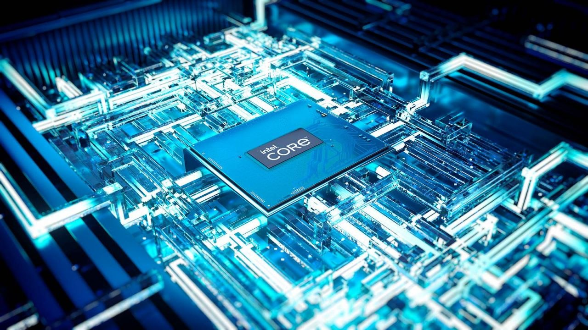
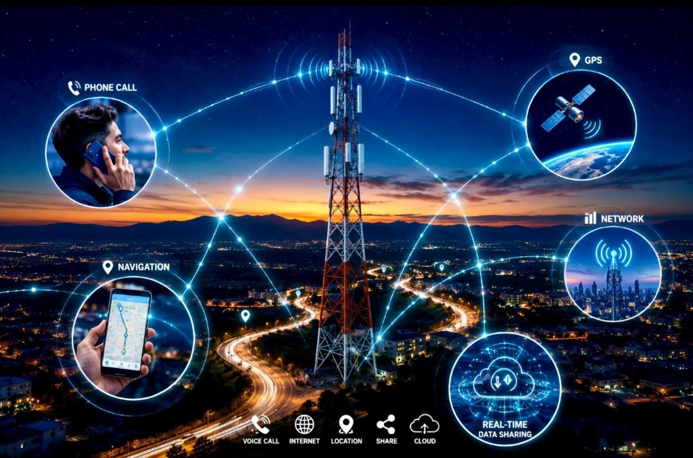
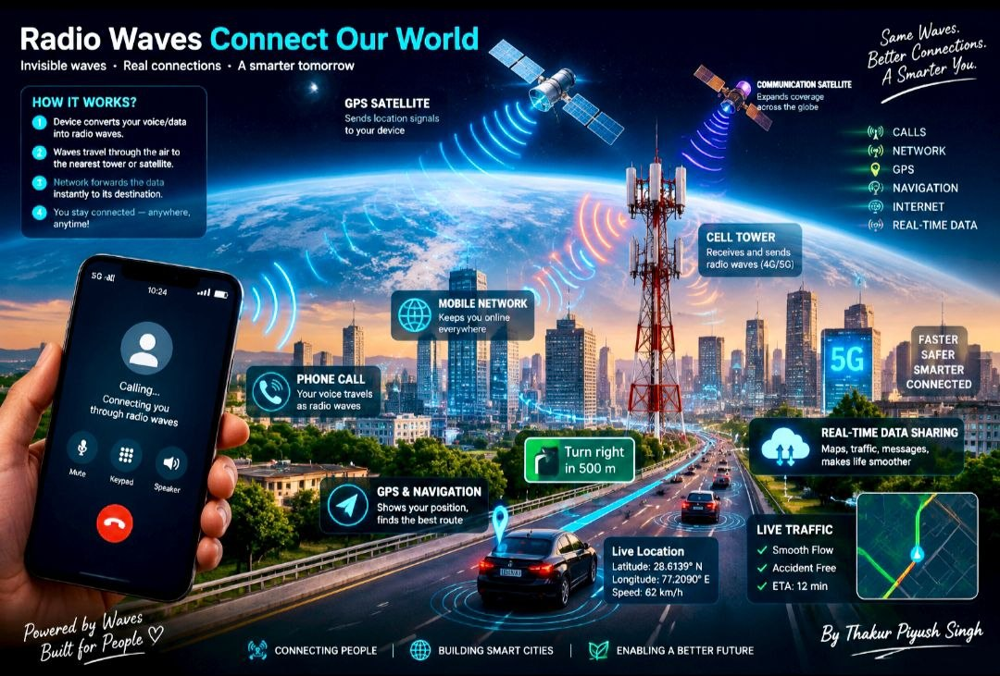
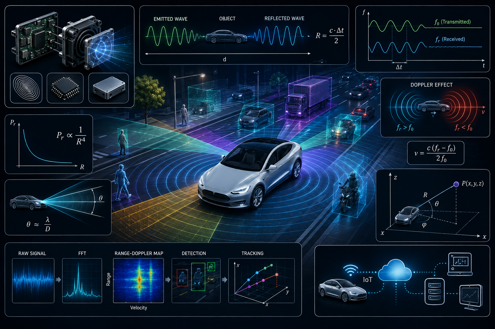
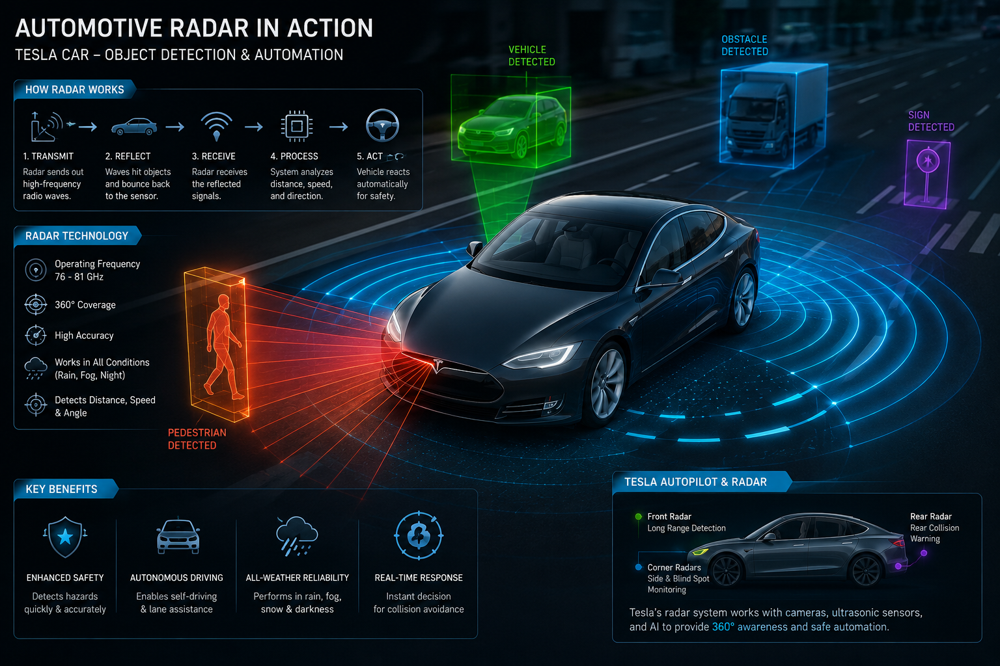

1. Network Systems & Infrastructure
InfrastructureNetworking interconnects physical hardware, virtualized nodes, and human operators to execute distributed computing, share resources, and transfer high-throughput data securely across global systems.
Technical Network Architecture
Relies on multi-layer OSI protocols and hardware to manage packet routing from edge devices to enterprise cloud backbones.
Core Topologies & Networks
- LAN (Local Area Network): High-speed local access using Ethernet or Wi-Fi 6E/7 (2.4 GHz, 5 GHz, 6 GHz).
- WAN (Wide Area Network): Interconnects regional centers via undersea fiber-optic lines and satellite links.
- Cloud & Hybrid Architectures: Secure connections to AWS, Azure, and Google Cloud through VPN tunnels and DirectConnect.
Protocol & Data Security
Encapsulated payloads travel physically through fiber pulses or wirelessly via mmWave 5G networks, protected by Zero-Trust policies, hardware firewalls, and end-to-end TLS encryption.
Professional Human Networks
Strategic Value
- Career Optimization: Over 75% of technical leadership positions are filled via strategic industry networks.
- Knowledge Exchange: Accelerates adoption of modern DevOps practices, RFC standards, and open-source stacks.
- Enterprise Growth: Drives strategic B2B partnerships and venture investments.
2. Cybersecurity & System Defense
Cyber DefenseCybersecurity safeguards networks, computational infrastructure, software endpoints, and critical data stores from unauthorized exploitation, maintaining the **CIA Triad** (Confidentiality, Integrity, and Availability).
Threat Vectors & Attacks
- Ransomware & Malware: Encrypted payload locks requiring zero-day patch prevention.
- Social Engineering & Phishing: Fraudulent credential harvesting vectors.
- DDoS Vectors: Volumetric volumetric attacks targeting network availability.
- Insider Threats: Unauthorized data exfiltration or privilege abuse.
Core Security Domains
- Network Security: IDS/IPS configuration, stateful firewalls, and micro-segmentation.
- Cloud & Endpoint Security: Automated IAM policies, identity federation, and EDR monitoring.
- Application Hardening: Defensive programming preventing SQL Injection (SQLi) and XSS.
- Compliance Controls: Mandatory Multi-Factor Authentication (MFA), automated patch pipelines, and AES-256 encryption.
3. Artificial Intelligence & Neural Networks
Machine LearningCognitive Hierarchy: AI vs. ML vs. Deep Learning
Artificial Intelligence provides broad computational intelligence. Machine Learning uses statistical algorithms to learn patterns directly from datasets. Deep Learning employs multi-layered Artificial Neural Networks to handle high-dimensional spatial and unstructured data.
Deep Neural Network Fundamentals
Nodes process vector representations using weight transformations, biases, and non-linear activation functions.
1. Layer Architecture

- Input Layer: Ingests raw multidimensional tensors.
- Hidden Layers: Performs feature extraction & representation learning.
- Output Layer: Emits target probability distributions.
2. Core Mechanics
Data maps through weights ($W$) and biases ($b$). The linear combination is passed into non-linear activations like ReLU or Sigmoid: $y = f(W \cdot x + b)$.
3. Optimization Loop
Uses Forward Passes, Loss Evaluation, and Backpropagation with Adam/SGD gradient descent to iteratively tune network parameters.
4. Sensors & Embedded Control Loops
IoT & HardwareEmbedded systems rely on closed-loop feedback mechanisms between physical transducers, processing ICs, and mechanical actuators to execute low-latency real-time actions.
Sensors (Inputs)
Convert real-world physical dynamics into digital signals using I²C, SPI, or UART interfaces.
Microcontrollers (Brain)
High-efficiency microcontrollers (STM32, ESP32, ARM Cortex) executing embedded algorithms on real-time OS (RTOS) platforms.
Actuators (Outputs)

Translates commands into mechanical force via stepper motors, PWM controllers, solenoids, and relays.
Real-Time Execution Loop

- Data Acquisition: Multi-channel ADCs sample continuous physical waveforms into high-resolution digital representations.
- Hardware Interrupts: Low-latency Interrupt Service Routines (ISRs) execute critical tasks instantly without polling overhead.
- Algorithmic Control: PID loops continuously minimize variance between setpoints and measured metrics.
- Pulse Width Modulation: Signals drive output switches precisely to maintain system stability.
5. Enterprise Server Architecture
Cloud & HardwareEnterprise servers supply continuous compute, storage, and networking capacity for distributed workloads, operating with dual redundant power paths, ECC memory, and high-performance processing architectures.
Core Server Types
- Web Servers: Process incoming HTTP/HTTPS connections and deliver assets (Nginx, Apache).
- Database Servers: Handle ACID-compliant transaction engines and caching layers (PostgreSQL, MySQL, Redis).
- Application Servers: Run business logic microservices across scalable instances.
Operating Models
- Bare-Metal: Un-virtualized physical hardware tailored for ultra-low latency requirements.
- Virtualization: Hypervisor-managed Virtual Machines running on dedicated bare-metal hosts (VMware, KVM).
- Container Clusters: Dynamic container orchestration managed across clusters using Docker and Kubernetes.
6. Radio Waves & GPS Trilateration
Satellite PositioningGlobal Positioning System (GPS) receivers process precision timing signals emitted by orbiting satellite constellations, calculating spatial coordinates via radio wave propagation delay.

3D Spherical Trilateration Geometry
- 1 Satellite: Defines a spatial sphere surface of equal propagation distance.
- 2 Satellites: Narrows target coordinates down to the circular boundary where two spheres intersect.
- 3 Satellites: Reduces coordinates down to two discrete points in 3D space.
- 4 Satellites: Resolves exact latitude, longitude, elevation, and corrects receiver clock bias $b$.

RF Spectrum Allocation
- L1 Frequency (1575.42 MHz): Primary civilian band for general consumer devices.
- L2 Frequency (1227.60 MHz): Precision band reserved for advanced commercial and military applications.
- L5 Frequency (1176.45 MHz): High-bandwidth signal designed for safety-critical aviation telemetry.
7. Autonomous Radar & Sensor Telemetry
Telemetry & Math

Physics & Applied Mathematics Formulations
1. RADAR Distance via Time-of-Flight (ToF): Millimeter-wave signals (77 GHz) travel at light speed $c$. Distance $d$ is derived from time delay $\Delta t$:
2. Doppler Shift Velocity Measurement: Relative velocity $v$ of target objects causes frequency displacement $\Delta f$ relative to center frequency $f_0$:
3. GPS Propagation Range: Pseudorange $R_i$ calculated from transmission timestamps:
4. Spherical Trilateration System: Computes spatial coordinates $(x, y, z)$ and clock bias $b$ relative to satellite position $(x_i, y_i, z_i)$:
5. Multi-Sensor Data Fusion: Integrates high-frequency local RADAR/LiDAR spatial maps with low-frequency global GPS telemetry via Extended Kalman Filtering (EKF) for real-time path planning and vehicle trajectory control.
8. Web Architecture & Service APIs
Full-StackModern web engineering relies on modular client-server interfaces. Systems communicate over REST/GraphQL Web APIs, while client browsers leverage non-blocking browser threads (Web Workers) for background computations.
Modern Full-Stack Specialization
Engineering teams divide responsibilities across modular components to optimize scalability, accessibility, and throughput.
Front-End
Builds dynamic client UIs using HTML5, CSS3, JavaScript, TypeScript, and modern libraries like React, Vue, or Angular.
Back-End
Engineers core API services, authentication protocols, business logic engines, and database layer abstractions.
DevOps & Cloud
Manages continuous deployment pipelines (CI/CD), containerized infrastructure, and automated scaling policies.
Core Engineering Tooling
- Languages: TypeScript, JavaScript, Python, Go, Java, C#.
- Frameworks: React, Next.js, Angular, Express, Django, Spring Boot.
- Persistence Layers: Relational SQL (PostgreSQL) and Document NoSQL stores (MongoDB).
- DevOps Stack: Git version control, Docker containers, Kubernetes, and GitHub Actions pipelines.